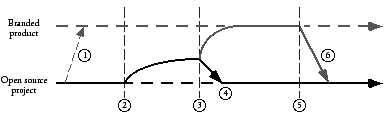
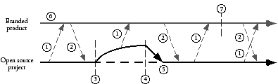
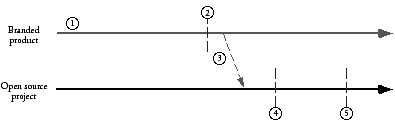

|
Previous Table of Contents Up Next How to Prepare to Do Open Source at Your CompanyIf your answers to the previous questions support the use of open source for your project, then what? We now discuss some steps you can take to create a successful open-source project. Resources at Your Company to Help YouIf your company is already participating in open source, then there are probably people in the company able to help you get started with your new open-source project--it might even be part of their job descriptions. Even if your project will be your company's first venture into the realm of open source, there are still apt to be internal company resources you can draw on to help make your project successful. Possibly your company has established some sort of Open-Source Program Office to help launch and maintain company-sponsored open-source projects. This may include one or more people whose job is to monitor and advise groups in the company in their dealings with the open-source community. They can be very helpful in advising you on what license to use, negotiating with outside providers to host your project's website, training your team, and building the community, for example. They may have an internal company website on company procedures for open-source-related activities. There might also be an internal mailing list to discuss open-source issues. Your company's legal department may have some people who know about open source, at least from a licensing perspective. We say more about legal issues later when we discuss getting source code ready to be made public and company policies for approving open-source projects. You should definitely talk with the folks in any other projects within your company that use or develop open source. They are the ones who are in the best position to help you understand what you are getting yourself into. Educate Yourself and Your Team about Open SourceThe best way to prepare to do open source is to participate in an existing open-source project. You or someone from your team should find an open-source project of interest and join it. Download the project's code and play with it. Follow the mailing lists. Perhaps fix a bug or contribute a small modification. Other members of your team should also participate in open-source projects that interest them. Doing this for a few weeks will give you and your teammates a good idea of what an open-source project really feels like. You will also gain an appreciation for what it's like to be an outsider. Were you treated courteously in your interactions with the project's module owners and core developers? Were your suggestions and contributions dealt with promptly? Did you feel accepted and encouraged? This should give you plenty to think about when you are running your own open-source project. Another way to learn about the open-source culture firsthand is to join discussions on websites such as Slashdot.1 Read the postings to see the range of people who make up the open-source community--from clueless newbies to experienced professionals. Post your own comments on topics you personally care about. Please avoid flaming. If you post with an email address from your company, you might check whether your comments are treated specially. Don't feel that you always need to defend your company--that's best done by people who don't work for your company. Not all developers are suited for the open way that open-source projects must be run. Getting a taste from participating in someone else's project may aid in identifying whether you, or someone on your team, is not well-suited for open source. Educate Your Manager about Open SourceDeveloping open-source software is quite different from creating proprietary software. You will need the support of your manager to succeed. Your manager, and probably his or her manager, will also need to understand how open source works along with its advantages and disadvantages. You need to make sure that your manager does not believe any of the various myths and misconceptions about open source (see Common Open-Source Myths, Misconceptions, and Questions in Chapter 3). Does your manager understand how an open-source development process will change how you do your work? Is it clear how the business model for the project is supported by open source? Most important, does your manager agree that the benefits gained by creating an open-source community around your project is worth more than your company keeping total control? It is vital to your project that your manager understands the basics of open source, especially after approving your use of it. If your manager has unrealistic expectations, you need to correct them immediately; they are certain to create major problems for you down the road. For example, some managers believe that open source will allow them to cut back on the number of company-employed developers working on the project because community volunteers will take up the programming load. When after a year you ask for more head count, they will feel deceived and you will probably be lucky to keep the resources you already have. Develop Your Business ModelIf you haven't already developed the business model for your project, now is the time to do so. Your business model should make it clear what your business goals are and how they fit with the company's goals. It should explain how using an open-source development model helps you achieve your goals. For more information, refer to Business Reasons for Choosing to Open Source Your Code in Chapter 4. Design Appropriate Review CriteriaYou and your manager will need to establish proper criteria to measure the success of your project. You need to include both the traditional metrics on the code itself and ways to measure the success of the community working on your project. Based on your business model, you need to decide which numbers are meaningful--for example, release dates, feature sets, market share, number of active outside developers, number of user contributions, or amount of email sent to mailing lists. You and your manager also need to meet with your human resources representative to design appropriate performance review criteria that measure developers on both their contributions designing and writing code and on their contributions to making the open-source community a success by responding to messages on project mailing lists, incorporating contributions and bug fixes from outside developers, and performing other community-related activities. Choosing a LicenseWhen you choose a license for your project, it is best to use one of the well-known, existing licenses rather than trying to create a new one. Even a short, clearly written new license is an additional hurdle that limits outside participation--and most new licenses tend to be neither short nor clear. Legal departments in universities and in other, noncommercial organizations are reluctant even to read a new license for their clientele, so if you want to address the university user and developer communities, writing your own license will probably backfire. For a fuller discussion of the various licenses, refer to Chapter 5; for the full text of each license discussed see Appendix B. Here are some questions that will help you select an open-source license:
You also need to decide on what a developer must agree to in order to contribute source code to your project. Refer to the section Supplementing the License--Contributor Agreements in Chapter 5 for more details. If you are thinking of joining an existing open-source project, then a license has already been selected by the project. You need to consider whether you can achieve your business goals under that license. If you are planning to combine the open-source code with proprietary code, then GPL will not work, but any of the other licenses, including LGPL, will be okay. Getting Your Source Code Ready to ReleaseIf you are starting a new open-source project, then you need to have working code in order to attract people to your project. Your code probably was not developed from scratch with the intent of making it available to the public, so you will need to get it ready before you can release it. There are two major aspects of the code to consider: design and legal ownership. Design IssuesOne aspect of proprietary code development is that most of the code is seen only by the developer who originally wrote it. It is not apparent to anyone else if the code has gotten ugly, if a rough prototype intended to be thrown away has instead become the production code, or if changes and patches have been force fit over an antiquated design in order to add new functionality. The prospect of opening up the source code to the scrutiny of outside developers can be quite unsettling. Before the source code is released, it is important to do a thorough design review of it to avoid embarrassment. We would all like the code to be perfect and polished, but that is never the case and not something that any open-source developer expects. But do check to make sure that the code is not truly awful; if chunks of it are truly awful, they may need to be worked on. Sometimes all that is needed is a comment explaining matters, for example, saying that something is a quick hack to provide functionality needed to test another module or that it handles only the basic case and needs to have special cases added later. If outside developers understand why a design or implementation decision was made, they will not make unreasonable criticisms of the code. However, they will be justifiably harsh if the code is really bad and there are no extenuating circumstances. Think of the source code as a work in progress, an approximation of what you want that is going to grow and change over time. Some parts will be exquisite jewels, whereas others will be lumps of coal. What is most important is that it is possible for an outside developer to make small changes to the code (for bug fixes or minor improvements) without breaking everything. Part of the design review, then, is to make sure that the code is open-source-friendly. It is critical that the source code builds or is usable in a working application that people can use right now. If the code is still in development and cannot be used to do anything interesting yet, then it may need more work before it is ready for release. Also, if the code is not already modular, you may need to make it so. Large monolithic applications that require the developer to know all of the code in order to modify a small part are not suited to open-source development. Another part of the design review is to examine the project documentation. If you do not already have a good architectural overview, clear instructions for installation, and a documented build process, then you need to write those documents. Your user community will also need a good user's manual. Legal IssuesBefore you can release any source code, you need to do due diligence on the code to make sure there are no legal problems. You must first be sure that your company legally has the right to release the source code. This means that you must check all of the code to see whether any of it was developed by a third party or whether it makes use of any third-party intellectual property (for example, patents or trade secrets). If any third-party work is found, you need to check the terms of the license that your company has to use it to see whether you can distribute it. For example, the Sun StarOffice office suite product contains third-party code for printing and spell checking that Sun cannot legally make available, so those modules could not be included when Sun created the OpenOffice open-source project based on StarOffice. Hence, OpenOffice started out with no printing or spell-checking code. The project has since written new code for printing and has incorporated a new spell checker developed by another open-source project. Searching your code for third-party IP can take a lot of time. Some of the searching can be done with automated tools (for example, using grep on all of the files for the word copyright ), but much must be done by hand. It is often very useful to bring fresh eyes to this task, so not just the engineers who have been working on the code should conduct the search. Don't forget budget concerns when you request engineers from other projects within your company to review your source code. The StarOffice example illustrates the need to check the source code itself rather than assuming that when your company acquires another company that all the source code in any of its products automatically is fully owned by your company. Code can be third party because it was third party to the company that your company acquired. The only safe way to identify all third-party code is to actually go and examine all the source code. It is also important to identify any of your company's IP in the source code that you might not want to make generally available, for example, code for which patents have not yet been filed. Which IP should be shared and which should not is a business decision. The source code may contain information about internal aspects of your company that you may want to remove, such as your future plans relating to other products or the names of former developers. There are many reasons why developers involved in creating proprietary software may not want their names associated with it when the code is open sourced; for example, they may not be proud of the code they wrote or they may not want to be bothered with questions about it. This means that you may also need to clean out CVS logs or entries in your current bug database. Finally, it is necessary to scrub the code of any nasty comments or inappropriate language. It can be embarrassing to your company if people find disparaging comments about other companies or individuals. If your code base is not too large, this is tedious but not too time consuming; if you have several million lines of code to scrub, as in StarOffice, this can be a major undertaking. One other legal issue concerns what to call the open-source application if it needs a different name than your company's branded product. You should have your company's trademark department check on any names you plan on using. It often does not make sense to trademark an open-source product name. Create a Rational Development PlanIf your business model involves building a branded product (whether proprietary or not) on top of your open-source project, then you need to be very clear on how the development of the two efforts will be tied together. You need to decide how you will merge changes developed in one effort into the other. Will you periodically take a snapshot of the open-source project and incorporate that into the branded product? Or will you do your sampling only after a major release of the open-source project? Will you incorporate the entire open-source code base or only selected parts of it? What is your process? Because the open-source project involves volunteer developers from outside of your company, you will not be able to dictate its release cycle; the community will decide on the schedule for doing a release and what features will be in it. If your derived, branded product has a fixed release date, what will you do if the open-source release is delayed? Can you slip your schedule for the branded product? One good process is to base the branded version on a stable release of the open-source project. Changes made to the branded product then flow back into the open-source code base. This process guarantees that both code bases are as similar as possible and minimizes problems of version skew. It also forces the schedule for the branded product to be tightly coupled with the open-source project release cycle. Figure 7.1 shows this, graphically. In the figure, the lower line is the ongoing open-source development effort and the upper line is the branded development effort. The numbers label the following events:

FIGURE 7.1. Branded product built on stable open-source project release.A major assumption in this process is that there will be no major differences between the open-source version and the corresponding parts of the branded product. The branded version may include additional functionality, but those parts in common with the open-source version will be a strict subset of the official open-source release. The only exceptions will be temporary improvements in the branded version, such as bug fixes or updated documentation, that will be migrated back to the open-source code base. An alternative, less desirable development process is to maintain two separate code bases and have the developers of the branded product decide both when to merge in code from the open-source project and when to submit changes back to it. This certainly gives you the most flexibility, but also the most management complexity because the two code bases will evolve independently. Graphically this process is shown in Figure 7.2. The lower line in the figure is the ongoing open-source development effort and the upper line is the branded development effort. The numbers label the following events and processes:

FIGURE 7.2. Branded product independent of the open-source project release cycle.Notice that the development of the open-source version and the branded product happen in parallel; there is no relationship between the release cycles of the two efforts. Code is taken from one effort and incorporated into the other whenever some developer thinks it is appropriate. The assumption here is that the two versions can have different features. They are now two separate products, sharing only a family resemblance. Over time, their differences will most likely increase unless there is some strong pressure to bring the two versions together. This style of development makes sense when the branded product includes proprietary features. Sometimes, as with early versions of GhostScript, these features will eventually be contributed to the open-source version. For other projects, such as sendmail, the open-source version is used to increase the quality by incorporating the feedback from many people using sendmail in real situations. In both these cases, the main developers must work extensively with the open-source community. A third (undesirable) development process that we warn you against is to use the development of the branded product to drive things forward. This is shown in Figure 7.3. Again the lower line in the figure is the ongoing open-source development effort and the upper line is the branded development effort. The numbers label the following events and processes:

FIGURE 7.3. Throwing code over the wall from the branded product to the open-source project.Here the development of the branded version takes place internally, and when it is done the new code is "thrown over the wall" to the open-source project. Note that improvements to the open-source project are never incorporated back into the branded product. Companies using this model probably have all their internal developers working only on the branded version, leaving the open-source effort solely to outside volunteers. This process treats the open-source project as a second-class effort, and as a result the open-source project will probably fail or at best become more like a user group. This development process is what we expect for proprietary software development. This is also the process that managers in your company may be most comfortable with and the one that they may try to force your project to use. However, using it will mean that you will not get any of the benefits from open source and that you will enjoy the negative publicity from a failing open-source project. Budgeting Resources for Your Project: People and WebsiteChapter 6 describes a number of tasks that you need to do in order to have a successful project. You need to assign people to the following jobs:
For a new project, all of these will initially need to be done by your company's employees. As your project grows, outside developers may volunteer to take on some of the tasks. If you are joining an existing open-source project, then you may need to handle only the module owners' tasks for the code you contribute. Your project's website provides the place for your community of developers to live. For more information on what the website needs to do, refer to A Community Website in Chapter 6. If you are starting a new open-source project, then you may also need to create a new website. If you join an existing project, there is probably an existing website that you will be able to build on. Choosing the Community ManagerThe community manager (or evangelist or community coordinator) is the company's voice to the community. This person is the Linus Torvalds of your project. Your project will be associated with this person at least as much as your project is associated with your company. The community manager has to be able to speak on a variety of technical, political, social, and community levels. Therefore, this person must be chosen carefully and must have a rare combination of skills. The following is a list of some of the most important ones:
Natural community managers share some things you can recognize: project leaders want them on their teams, marketing people ask them to make presentations, and email from them is clear, crisp, and definitive. Finding this person will not be easy. You may hesitate to assign anyone with these capabilities and qualities to a project role that might not seem to be the most profitable use of such talents. This shows exactly how seriously you should take the decision to go with open source--it must be worth assigning one of your most talented developers to what some would call a babysitting role. Creating a WebsiteIf you even suspect that you might want to create a website for your project, immediately acquire the rights to the appropriate domain name. Do it now. Your website will need to provide the following services:
If you are doing internal open source where everyone involved is a company employee, then you want a website inside your company's firewall. For a gated-community or a true open-source project where people outside your company will participate, then for security reasons you probably want to host your website outside of your company's firewall. You have three choices:
Which one you pick will depend on your budget and project needs. Before your website can go live you need to have your company's legal and trademark folks take a look at it to check that there are not any legal or trademark problems. You should reserve time with them so they can look over your web pages well in advance of when you make the website accessible to the public. Contract with a Company that Does Web Hosting of Open-Source ProjectsCompanies such as CollabNet2 provide many of the services your open-source project will need. They also charge a significant fee per year to do so.3 In addition to providing the computers and software to host your website, the services also include a person to check that the community is functioning properly and perhaps another person to be the website editor. If your project has any special needs, you can contract for additional features. For a large project, having CollabNet host the website may make sense. Sun uses CollabNet to host a number of its sponsored open-source projects such as NetBeans and OpenOffice. Note that it can easily take 3-4 weeks to finalize a contract for your project, so don't leave creating your website until the last minute. For its Collaborative Development Program (CDP), Hewlett-Packard's printing and imaging division contracted with CollabNet to provide web hosting. CDP is a gated community where HP's worldwide employees can collaborate on software development projects along with HP's business partners and customers. Sun has a special website called SunSource.net4 for smaller Sun-sponsored open-source projects. This website is also hosted by CollabNet. Because the web infrastructure is shared by a number of projects, the cost is much less than setting up and running many separate project websites. However, because the infrastructure is shared it is harder to add special features for a specific project. One benefit of using a company such as CollabNet is that its staff includes people with lots of experience with numerous open-source projects. They can help train your team in how to do open source and how to interact with the open-source community. Another benefit is that they know what tools an open-source project needs and they provide them as part of their basic offering. Be aware, however, that they may not be able to provide support for additional features or to customize your project's pages. Be sure to check out several open-source projects that they host to determine whether they provide the features that you want for your project. Use a Free Open-Source-Project Hosting SiteBecause many open-source projects are composed largely of developers working in their free time with no sponsoring organization, websites have sprung up, such as VA Software Corporation's SourceForge5 or the Free Software Foundation's Savannah,6 that provide free hosting of open-source projects. This is great for developers and projects with no budgets, but it means you are limited to whatever basic features the hosting organization provides, which may include banner ads on your web pages. For a small project with limited resources, SourceForge or Savannah may be the only possible alternative. For a small project that may not be very visible, having it live on a website that lots of open-source developers regularly visit can only improve your chances of potential volunteers stumbling across your project. Be sure to include a complete description of your project when you register it so that anyone searching through the current projects can find yours. In summer 2004, there were over 83,000 projects hosted on SourceForge and over 2000 on Savannah. Do It YourselfMany of the large well-known open-source projects, such as Apache and Mozilla, are self-hosted. Project volunteers maintain and support all the infrastructure for the website, CVS tree, bug database, and mailing lists. Versions of all the tools needed to host an open-source project are themselves available as open source. So if you choose to, you can do it yourself and set up your own website. You will need either to have use of a company-owned web server outside your corporate firewall or to contract with a company that does web hosting. You then do all the work to set up web pages, mailing lists, CVS trees, and your bug database. The website for Jini.org was at one point run on a workstation owned by the Jini group and collocated at Best.com. The IBM subsidiary that originally developed the code that became the Eclipse project originally hosted the Eclipse website alongside the subsidiary's public website. It is also possible to buy versions of the software used by the open-source-project hosting websites mentioned: VA Software sells SourceForge and CollabNet sells its successor to SourceCast--called CollabNet Enterprise Edition--to companies to set up for their external open-source projects or for internal open-source or gated communities. An open-source version of SourceForge called Gforge7 is also available. If you host your project's website on one of your company's web servers, then there are several potential problems you need to watch out for. First, and most important: make sure your open-source project is distinct from the corporate website. In order to create a real community, you need to give your project's web pages a look and feel that is different from those of your company's web pages. Ideally, your project will have its own domain name and not use a URL that includes your company's domain name. Check that your company's policy is flexible enough to let your project have its own flavor. Next, you need to check your company's policy on the types of materials that can be posted on a company-sponsored website. The needs of an open-source project are quite different from those of a corporate website. Posting third-party content is often avoided on a corporate website, but it is the lifeblood of a successful open-source project. Make sure that keeping an archive of messages sent by community members, which might include comments critical of your company or one of your competitors, is all right. Check that contributions from the community can be made available as downloadable files. How involved will your company's legal people be in approving what goes on your website (such as, liability issues, use of trademarks, and compliance with export regulations)? Will you be more restricted by being hosted on one of your company's web servers than if you had contracted with an external web-hosting company? Third, find out whether you can directly edit your website or whether someone in your company's IT department must do this. Having your IT department maintain your web server is a major plus, but if the result is that minor changes take weeks to enact that won't work very well. Some projects combine the do-it-yourself approach with the use of one of the free open-source-hosting websites. For example, JBoss, an open-source Java application server project, has its own website8 with project information and discussion forums, but relies on SourceForge9 to provide its CVS tree, bug database, file downloading, and task management. Making Use of an Existing WebsiteIf you are joining an existing open-source project, then you will probably be able to use the project's website and not have to create a new site of your own. If you are joining in on the work of ongoing modules, then all of the mailing lists, CVS archives, and bug databases should already exist; you just need to subscribe to the mailing lists and start contributing. If you are developing new modules, then you will probably need a new mailing list for each module. If it is a large project, then it very likely that there is an easy (possibly automated) way to create a new subproject, complete with archived mailing lists and a directory in the CVS tree. Some open-source efforts, such as Apache, require that you either be a member of the Apache Software Foundation (ASF) or have a member's sponsorship in order to start a new subproject. Adding a new subproject to an existing website generally will not put a strain on the site's resources. If you expect your project will be a significant burden due to the size of the code base or the traffic on the discussion lists, then you might want to consider donating server machines or making a monetary contribution. Talk to the website maintainers and find out what they need to make the website better. It's always good to volunteer resources, but don't assume they will be accepted (for example, a Linux-based website will probably not be interested in a Solaris-based web server). Having your company listed as a supporter of the website is also a plus. Your Website Needs an Editor-in-ChiefYour project may be making great progress as developers work on the source code, but, if no one is reporting the improvements on your website and general mailing lists, then to the outside world your project will look dead. A stale website will turn people away, so you need to have someone assigned to keep the website home page up-to-date with the latest project news. You want your website to attract both users and potential developers. The larger your project, the more important it is to have a person whose job it is to let everyone know what's happening. Editing the website may be part of the community coordinator's job. Cross-Linking with Your Company's Web PagesYou should have pointers to your project's web pages from appropriate places on your company's main website. For example, on IBM's website,10 the IBM WebSphere Studio Workbench product web pages have pointers to the Eclipse website,11 and on Sun's website12 the Sun Java Studio product web pages have links to the NetBeans website.13 The editor of your website should coordinate with the people managing your company's website so that it has up-to-date news of your project. Often, when your project is first announced there will be lots of stories and links on several of your company's web pages, but months later nothing will have changed. Stale references make it seem as if your project has not progressed. You also should make sure that any link from your open-source website back to a commercial website is appropriate. Having a banner ad for Sun on the NetBeans website would be in very bad taste, as would giving Sun preferential treatment with links to Sun products. However, having a page of links to companies offering commercial NetBeans plug-in modules, including ones from Sun, would be okay.
|
|||
|

|